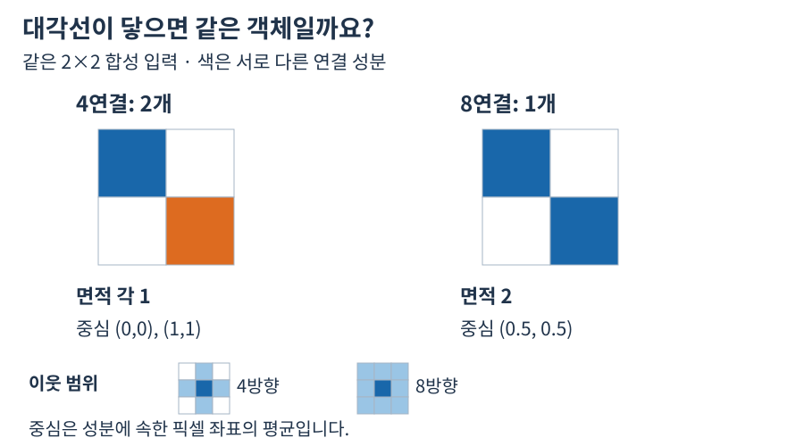

대각선 연결성 비교
두 픽셀 좌표 (0,0), (1,1)의 산술 평균은 (0.5,0.5)입니다.


자료에서 확인할 점
- 4연결은 대각선을 이웃으로 보지 않습니다.
- 8연결의 한 성분은 면적 2이며 중심은 픽셀 좌표의 평균입니다.
실제 API에 적용하기
4-연결은 좌·우·상·하만 이웃으로 판단하고, 8-연결은 대각선도 포함합니다. 예를 들어 3×3 이미지에서 (0,0), (1,1), (2,2)만 전경이면 4-연결에서는 세 개의 Blob, 8-연결에서는 하나입니다.
네 방향 연결은 각 픽셀의 상하좌우만 전경 이웃으로 인정합니다. 여덟 방향 연결은 그 네 방향에 대각선 네 방향을 추가합니다. 이 기준으로 묶음이 달라지기 때문에 연결성은 나중에 결과 목록을 정렬하는 옵션이 아니라 객체가 무엇인지를 정의하는 입력 조건입니다.
대각선에만 전경이 놓인 3×3 마스크는 Four에서 세 객체, Eight에서 한 객체입니다. 한 영역으로 묶일 때 면적은 세 픽셀이고 중심은 세 좌표의 평균 (1,1)입니다. 같은 세 픽셀을 세 객체로 나누면 각 면적은 1이며, 전체 면적을 더해야 3이 됩니다.
4-연결과 8-연결 · Blob Analysis · 연결 영역에서 함수 선언, 인자와 반환 결과를 확인하세요.
설명과 실행 결과의 범위
수치와 도형은 연결된 계약의 핵심 관계를 설명하는 예입니다. 실제 SDK 출력으로 명시한 자료를 제외하면 실행 결과나 장비 실측으로 해석하지 않습니다. 좌표계·입력 형식·수명과 오류 조건은 관련 API 계약을 확인한 뒤 적용하세요.